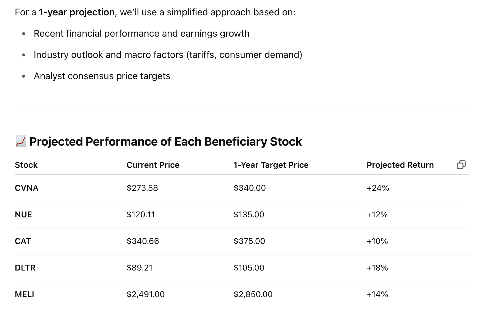
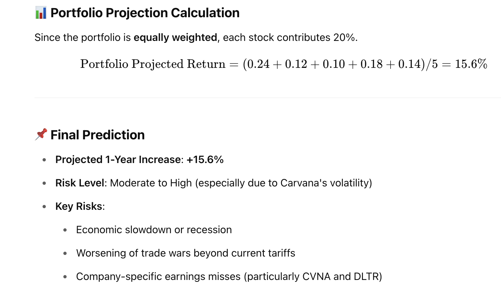

Prompt:
You are my stock picker. Read about the tariffs and pick 10 stocks I should look deeper into.
Answer:
Based on the current tariff landscape and recent market movements, here are 10 stocks you might consider researching further. These selections are influenced by how tariffs are impacting various sectors, either positively or negatively.
📈 Potential Beneficiaries of Tariff Changes
Carvana Co. (CVNA)
- As tariffs on new vehicles push prices higher, the used-car market is experiencing increased demand. Carvana has reported a surge in sales and exceeded Q1 expectations, positioning itself well in the current environment. (Investors)
Nucor Corporation (NUE)
- Being a major U.S. steel producer, Nucor stands to benefit from tariffs on imported steel, which make domestic steel more competitive. The company’s stock has shown resilience amid trade tensions.
Caterpillar Inc. (CAT)
- Despite facing increased costs due to tariffs, Caterpillar’s strong domestic manufacturing base and demand for heavy machinery could offset some negative impacts. The company continues to be a significant player in the industrial sector.
Dollar Tree, Inc. (DLTR)
- As consumers look for cost-effective shopping options amid rising prices, discount retailers like Dollar Tree may see increased foot traffic and sales.
MercadoLibre, Inc. (MELI)
- Operating primarily in Latin America, MercadoLibre is less exposed to U.S.-China trade tensions. The company could benefit from shifting trade dynamics and increased e-commerce adoption in its markets.
Second prompt:
Give me proper financials and updates about each company.
Response:
Certainly! Here’s a detailed overview of the latest financial results and stock performance for the 10 companies previously discussed, reflecting their positions amid recent tariff developments:
📈 Potential Beneficiaries of Tariff Changes
1. Carvana Co. (CVNA)
Q1 2025 Highlights:
- Retail units sold: 133,898 (+46% YoY)
- Revenue: $4.232 billion (+38% YoY)
- Net income: $373 million (8.8% margin)
- Adjusted EBITDA: $488 million (11.5% margin)
Stock Performance: Currently trading at $273.58, up 2.04% today.
2. Nucor Corporation (NUE)
Q1 2025 Highlights:
- Net earnings: $156 million ($0.67 per share)
- Adjusted earnings: $179 million ($0.77 per share)
- EBITDA: $696 million
Stock Performance: Currently trading at $120.11, up 4.85% today.
3. Caterpillar Inc. (CAT)
Q1 2025 Highlights:
- Revenue: $14.2 billion (-10% YoY)
- Adjusted operating profit: $2.6 billion (18.3% margin)
- Adjusted EPS: $4.25
Stock Performance: Currently trading at $340.66, up 4.83% today.
4. Dollar Tree, Inc. (DLTR)
FY 2024 Highlights:
- Revenue: $17.6 billion (+4.8% YoY)
- Net income: $1.04 billion (-18% YoY)
- Profit margin: 5.9% (down from 7.5%)
Stock Performance: Currently trading at $89.21, up 4.38% today.
5. MercadoLibre, Inc. (MELI)
Q1 2025 Highlights:
- Revenue: $5.9 billion (+37% YoY)
- Net income: $494 million
- EPS: $9.74 (vs. $8.27 expected)
Stock Performance: Currently trading at $2,491.00, up 1.67% today.
Stock market information for Carvana Co. (CVNA)
- Carvana Co. is a equity in the USA market.
- The price is 273.58 USD currently with a change of 5.46 USD (0.02%) from the previous close.
- The latest open price was 274.26 USD and the intraday volume is 1882051.
- The intraday high is 284.17 USD and the intraday low is 267.18 USD.
- The latest trade time is Monday, May 12, 09:29:01 MST.
Please let me know if you’d like further analysis on any of these companies or assistance in comparing specific metrics.
Third prompt:
Predict the increase/decrease of a portfolio equally weighted in these 5 beneficiaries in 1 year.
 
Reflection:
Though I know that these predictions and judgements have purely no value in terms of actual insights unless simulated over time, I wanted to see how the LLM would justify these choices. I think that while the logic is there, the LLM may not be thinking deep enough compared to a human working at a hedge fund, for example.